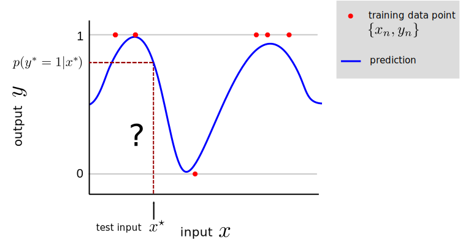

Classification¶
Classification is a class of supervised machine learning tasks in which the aim is to predict a discrete valued output \(y^\star\) at an input location \(x^\star\) using a training set of input-output pairs \({x_n, y_n}_{n=1}^N\) pairs. Classification is therefore similar to regression, but regression considers continuous valued outputs rather than discrete ones.
Here’s a cartoon classification task where the outputs take the value \(0\) or \(1\). Often the classification task involves returning to the user a probability distribution \(p(y^\star|x^\star)\), here shown in blue, which indicates the probability of observing each possible output value at an input \(x^\star\).

Like regression, classification encompasses many different types of input e.g. they can be scalar or multi-dimensional; real valued or discrete.
Example classification problems include:
Application |
Inputs |
Outputs |
|---|---|---|
email spam filtering |
email message |
spam / not spam |
medical diagnosis |
patient medical data |
disease diagnosis |
object recognition |
image RGB pixel values |
object present in scene |
speech recognition |
audio waveform |
words spoken |
machine translation |
text in language 1 |
text in language 2 |
There are many different subclasses of classification problem. Binary classification problems just have two possible output values (e.g. spam vs non-spam), but multi-class classification problems have many possible output values (e.g. object recognition with a single object in each image). Multi-label classification, analogous to multi-ouput regression, has multi-dimensional outputs (i.e. multiple labels per input, e.g. object recognition with many objects in each image). Multi-label classification tasks in which there strong dependencies between the output dimensions belong to the class of structured prediction problems (e.g. machine translation whether the output is a sequence of words).
The focus of many classification tasks is on predicting the output, but for many the goal (or subgoal) is to understand the relationship between the inputs and the outputs. For example, classification can be used to determine what inputs effect whether someone votes Democrat or Republican.
Our tour of classification will cover many of the same cross-cutting concepts we met in regression, including generative models, maximum likelihood estimation, overfitting and probabilistic inference. Whereas many regression models lead to analytic parameter estimates and predictions, classification models typically do not and so optimisation methods will be needed for maximum likelihood estimation and approximation methods for probabilistic inference.
Outline of this section¶
Binary logistic classification
a. Understanding the binary logisitic classification model
b. Fitting the binary logisitic classification model using maximum likelihood
c. A case study: applying binary classification to the iris dataset
Logistic regression for multiple classes
Handling non-linear decision boundaries.
Understanding the ways classification models can overfit and automatically diagnosing them.